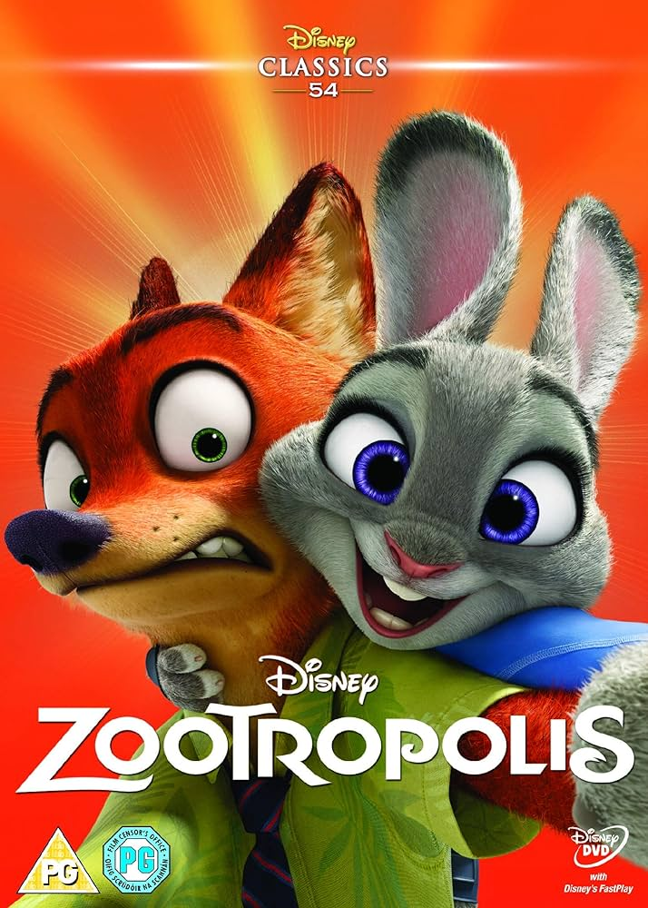
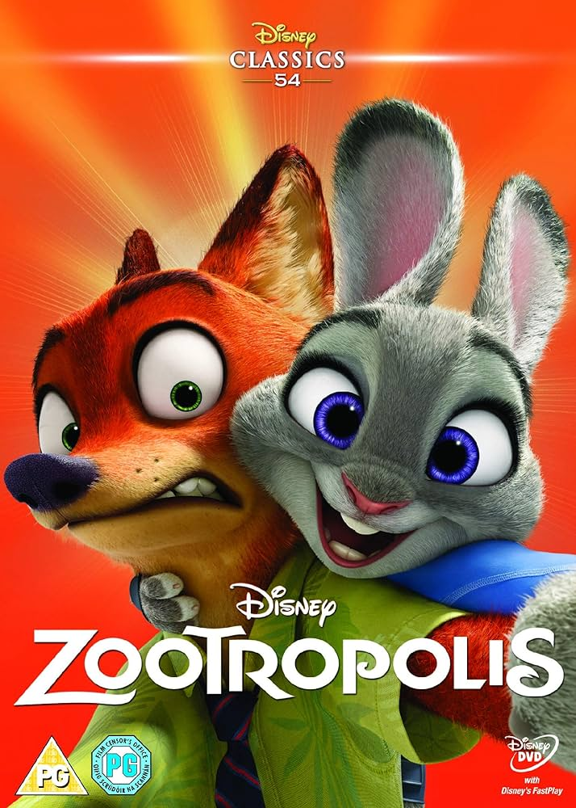

Zootropolis: Hayvanlar Şehri (Birleşik Devletlerdeki adıyla “Zootopia”), Walt Disney Pictures tarafından yayınlanan ve yapımcılığı Walt Disney Animation Studios tarafından yapılan 2016 yapımı üç boyutlu, bilgisayar animasyonu, gizem, suç,
komedi filmi. Disney'in 55. uzun metraj filmidir. Byron Howard ve Rich Moore tarafından yönetilen filmin seslendirme kadr- osunda Ginnifer Goodwin, Jason Bateman, Idris Elba, Jenny Slate, Nate Torrence, Bonnie Hunt, Don Lake, Tommy Chong, J. K.
Simmons, Octavia Spencer, Alan Tudyk ve Shakira yer almaktadır.[4][5] Film; polis olmak isteyen bir tavşanın hayallerinin
peşinden gitmesini, ulaştıktan sonraki hayal kırıklığını ve işini yapma arzusunda yaşadıklarını konu edinmektedir.
Film galasını 17 Şubat 2016'da El Capitan Theatre'da yaptı ve 4 Mart 2016'da geleneksel 2D, Disney Digital 3D, RealD 3D ve
IMAX 3D biçiminde gösterime girdi.[6][7] Hikâyesi, animasyonu, mizahı, stereotip ve ırkçılık teması için övgü aldı. Bazı
ülkelerde gişe açılış rekorları kırarak dünya çapında 1 milyar $'dan fazla hasılat etti. 2016'nın en çok hasılat yapan dördüncü
filmi ve tüm zamanların en çok hasılat yapan 26. filmidir. 8 Şubat tarihinde Disney CEO’su Bob Iger, devam filmi üzerine çalıştıklarını belirtmiştir.
Amerikan Film Enstitüsü tarafından 2016'nın En İyi 10 Filmi'nden biri seçilen film, En İyi Animasyon Filmi kategorisinde Akademi ve Altın Küre ödülünü kazandı, ayrca BAFTA ödülüne aday gösterildi.
ZOOTROPOLİC 2

Zootropolis 2 (çeşitli bölgelerde Zootopia 2 veya Zoomania 2 olarak adlandırılmıştır), Walt Disney Animation Studios tarafından üretilen ve Walt Disney Pictures tarafından yayınlanan, yakında vizyona girecek bir Amerikan animasyon dost polis aksiyon komedi
filmidir. Jared Bush tarafından yönetilip yazılan, Josie Trinidad'ın (ilk uzun metrajlı yönetmenlik denemesi) ortak yönetmenliğini üstlendiği ve Yvett Merino ve Jennifer Lee tarafından yapımcılığı üstlenilen film, Zootropolis: Hayvanlar Şehri (2016) filminin
devamı ve Zootropolis serisinin ikinci bölümü olacak. Walt Disney Animation Studios tarafından üretilen ve Walt Disney Pictures tarafından yayınlanan Amerikan animasyon dost polis
aksiyon komedi filmidir. Jared Bush tarafından yönetilip yazılan, Josie Trinidad'ın (ilk uzun metrajlı yönetmenlik denemesi) ortak yönetmenliğini üstlendiği ve Yvett Merino ve Jennifer Lee tarafından yapımcılığı üstlenilen film, Zootropolis: Hayvanlar Şehri (2016) filminin devamı ve Zootropolis serisinin ikinci filmidir.